Micaela Hellström
Medgrundare, 30+ år. Författare av Naturvårdsverkets eDNA-riktlinjer.
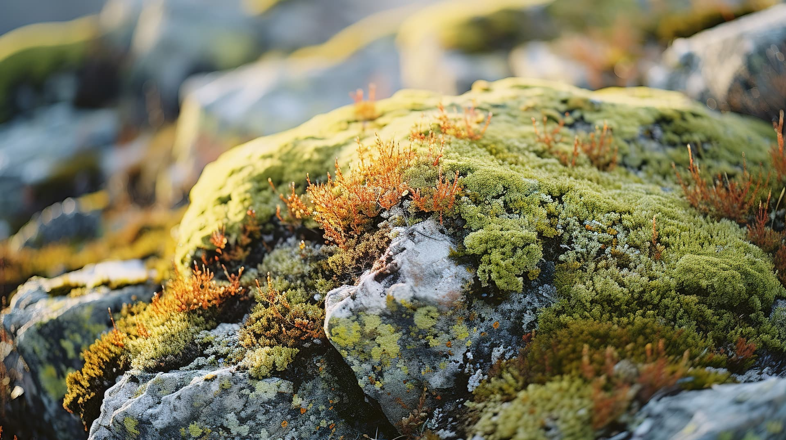
MIX Research gör DNA-spår till beslut för naturen.
Utforska arbetet ↘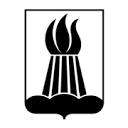
Samarbeten inom ekologi, naturvård och forskning.
Kartlägg biologisk mångfald — utan att störa ekosystemet.
Tillförlitliga biodiversitetsdata för tillstånd, miljöövervakningar och naturvårdsprojekt. Vi hanterar hela kedjan från provtagning till rapport.
Diskutera ert projekt ↗Framtidens metod för miljöanalys.
Alla organismer lämnar DNA-spår i sin omgivning. Genom att analysera dessa spår kan vi identifiera vilka arter som finns i ett område — utan att fånga eller ens se dem.
Gå till fältanteckningarna ↗Sju sätt att göra ett spår till en användbar ekologisk bild.
 01↗
01↗Identifiera alla fiskarter från ett enda vattenprov och följ populationsförändringar över tid.
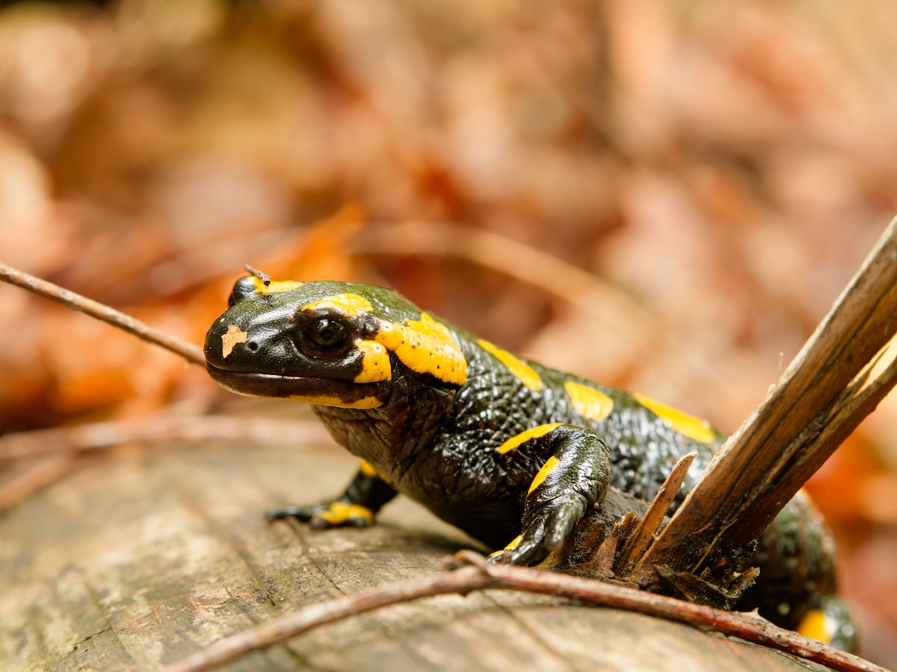
02↗Verifiera förekomst av rödlistade arter för MKB och tillståndsprocesser.
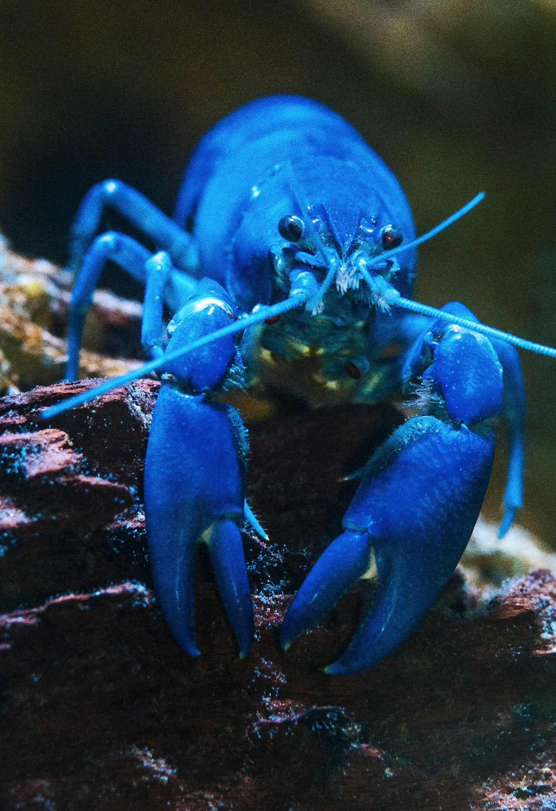
03↗Tidigt upptäcka och kartlägga spridning av invasiva arter med hög känslighet.
 04↗
04↗Kartlägg svamp- och bakteriesamhällen i markprover för att bedöma skogens biologiska värden.
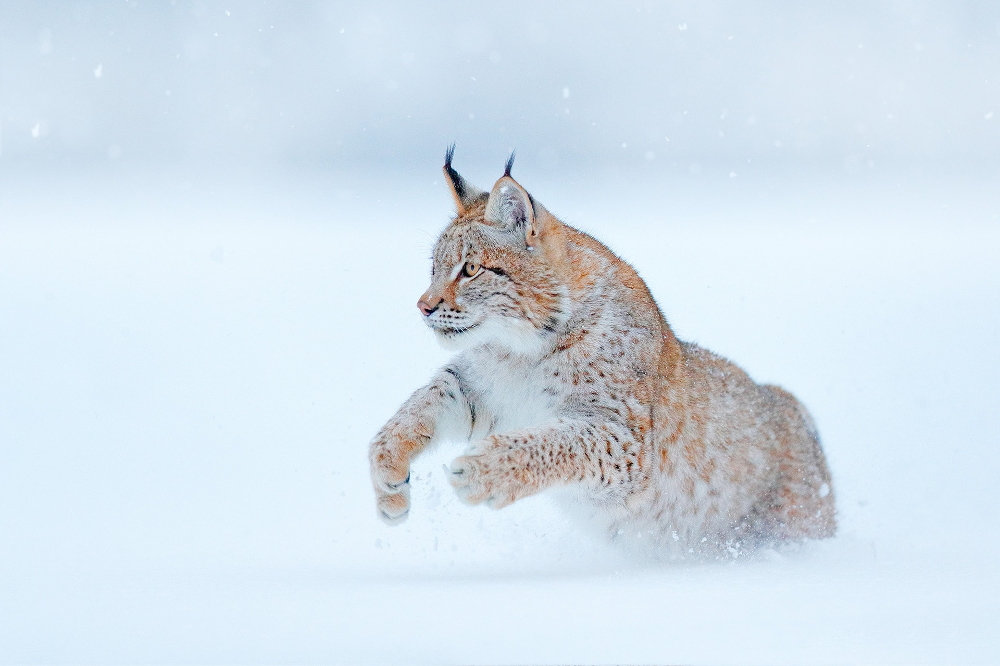
05↗Identifiera enskilda djur, kön och släktskap — lodjur, isbjörn, järv och utter.
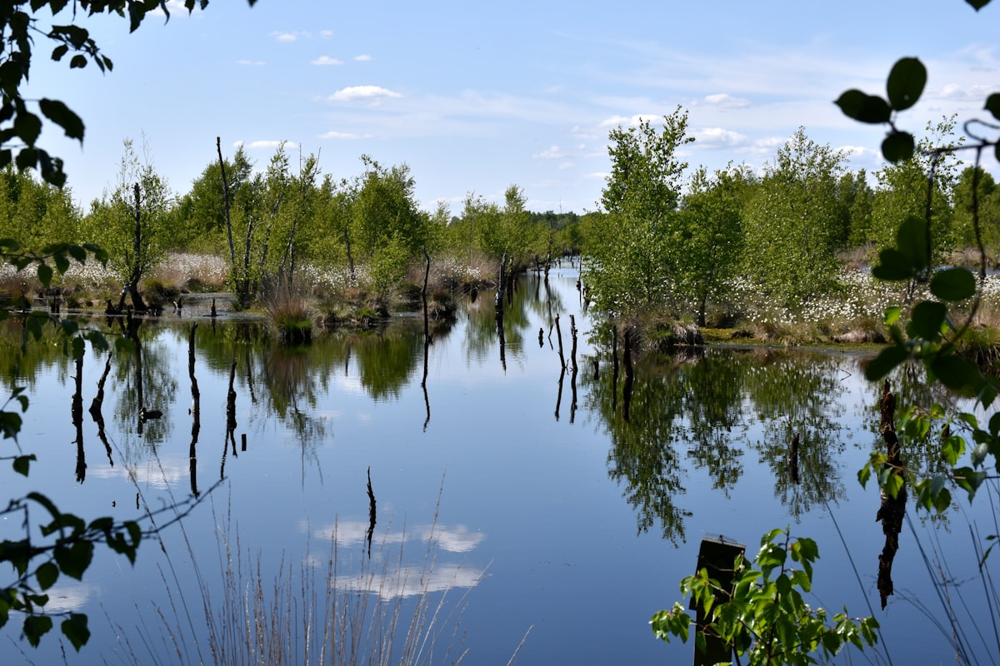
06↗Jämför och prioritera bevarandeområden. Mät effekterna av åtgärder över tid.
 07↗
07↗Behöver ni en unik lösning? Vi designar anpassade undersökningar — från offshore vindkraftsprojekt till populationsgenetiska studier och fleråriga övervakningsprogram.
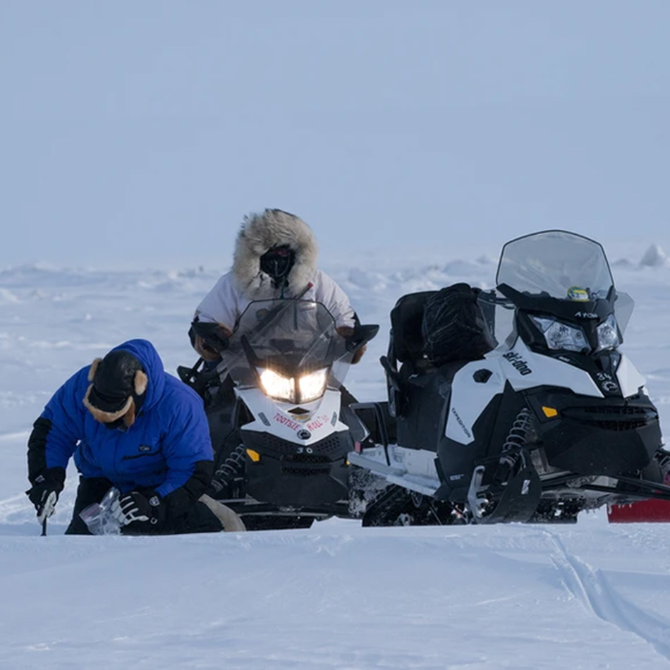
Identifiering av individuella isbjörnar genom DNA-analys av snöprover i extrema arktiska miljöer.
Läs fallet ↗Ekologer, genetiker och fältmänniskor som arbetar i samma levande system.
Medgrundare, 30+ år. Författare av Naturvårdsverkets eDNA-riktlinjer.
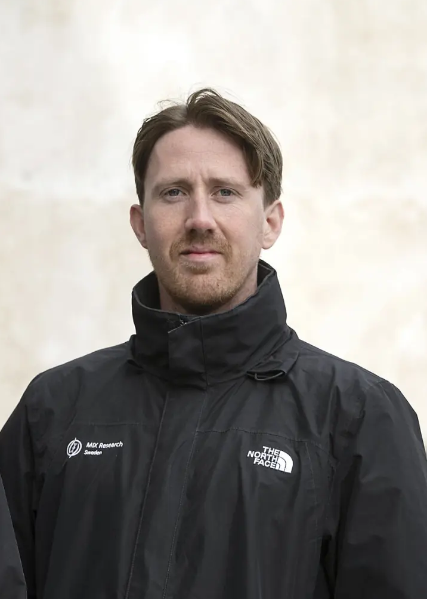
Medgrundare. Marin miljökonsulting och offshore vindkraft.
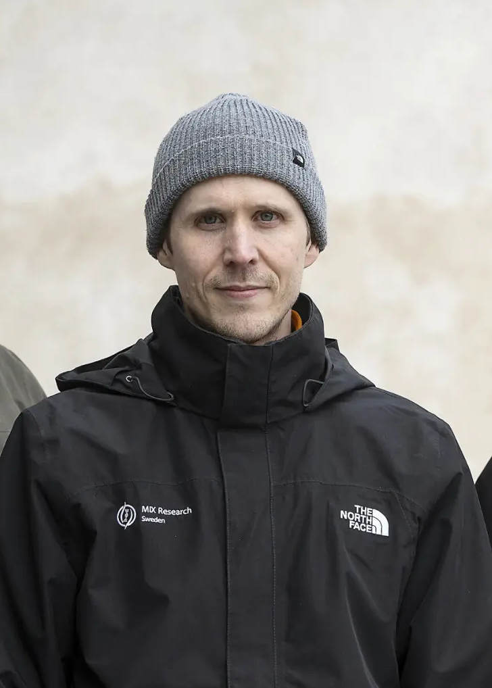
Medgrundare. GIS-analys och eDNA i sötvattensmiljöer.
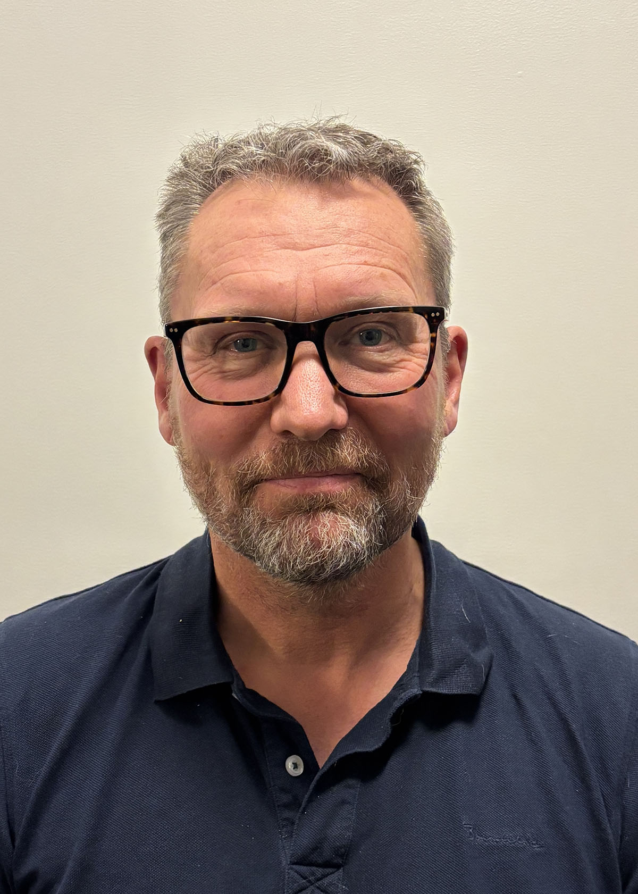
Strategisk rådgivare för verksamhetsutveckling.
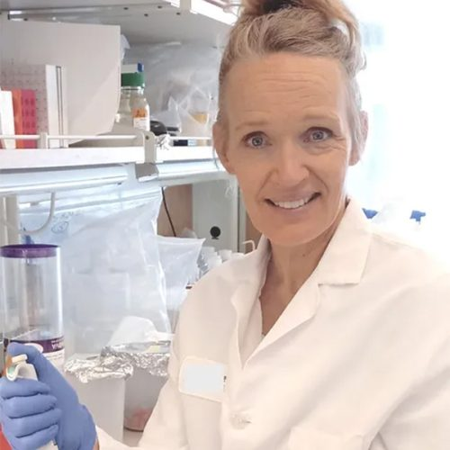
Medgrundare. 20+ år mikrobiell ekologi.
Hellström M, et al.
Hellström M, et al.
Bruce K, Hellström M, et al.
Sengupta M, Hellström M, et al.
Har du frågor eller vill diskutera ett projekt? Vi återkommer inom 24 timmar.
info@mixresearch.se ↗